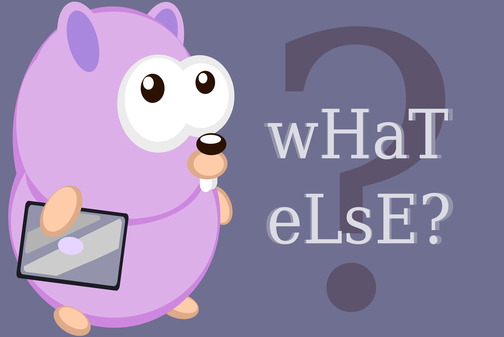

What “Else”?

The setup
Want to know a cool principal in Go?
Golang discourages unneeded code, it slows the compiler, can cost compute resources and makes it less readable and ugly.
One thing pattern you’ll get used to seeing goes something like this:
foo, err := doThingThatMayGoWrong(bar)
Unpacking this, doThingThatMayGoWrong() is a function which returns two things one being an error and the other being a meaningful var.
You might see it written like this?
_, err := doThingThatMayGoWrong(bar)
The difference being the underscore - a slight tangent underscores are used in Go to declare a variable that you know you are not going to use.
The punchline
In most languages this is how errors might be handled:
if err == nil {
// Panic?
} else {
// Do this
}
Go programmers try to use variations on this form:
if err != nil {
return
}// Do this
* Keep reading the “Bonus” section if you don’t get the empty return
So what is good here is that the programmer is returning the error which makes the else redundant as it won’t be called if there is an err because the function will stop here. This, check negative outcomes (or fail fast and recover) approach prevents alot of unessessary code from running making programs faster.
I should mention that Go does have an else but it is used much less due to the approach.
Bonus
This leads me on to another neat Go-ism which I am going to digress into.
Read this function :
func mayGoWrong(foo int, bar string) (str string, err error) { // Note the "named returns" str & err
if foo != len(bar) {
err = errors.New("Error: the string needs to be equal length to the int")
return
}
for i:=0; i < foo;i++ {
fmt.Print(string(bar[i]))
str += string(bar[i])
}
return
}
Ok, lets unpack this.
- The func accepts an int (
foo) and a string (bar) The func has two named args set in the brackets at after the
foo/barargs. These are a string calledstrand an error callederr. This line could be rewritten as:func mayGoWrong(foo int, bar string) (string, error) { var str string var err error //... //... return str, err }Another cool thing, Go has default values for every thing you declare in this case an
error == niland astring == "". So as soon as the function names these variables in as named return values you can assume that when return is called their current value will be used even if they are still using their default values. So errors are nil unless you meant changed that.
Thats a good thing for reading code and for lazy programmers like me!